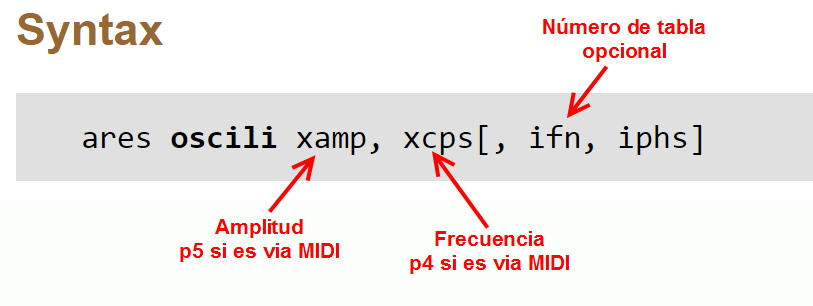
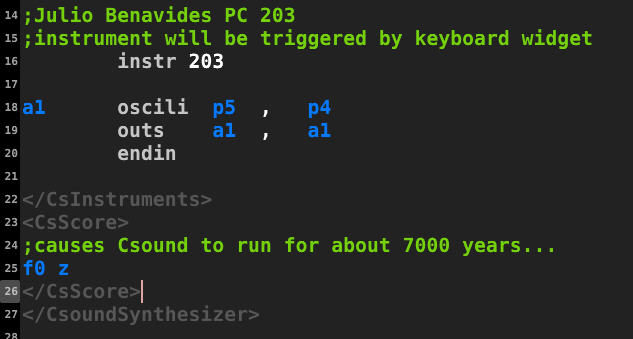
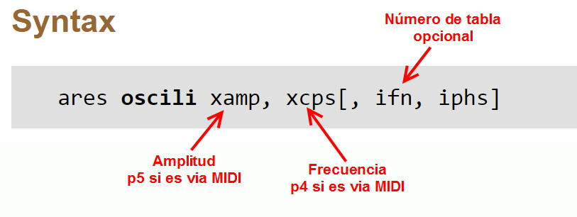
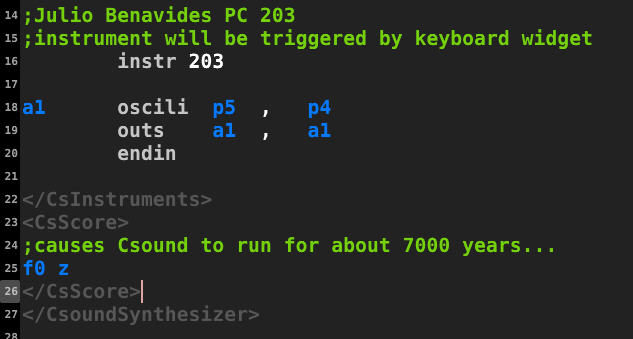
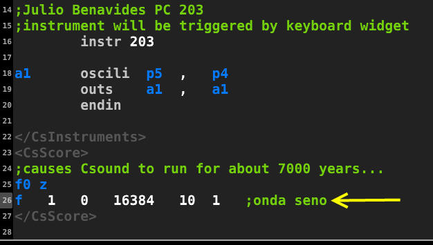
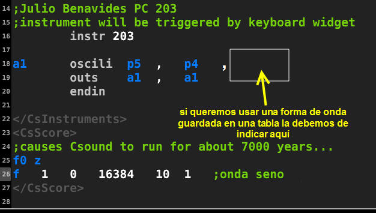
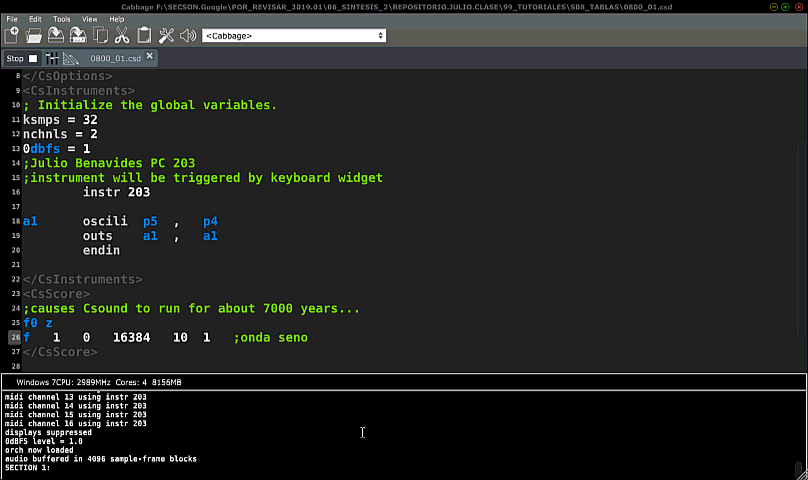
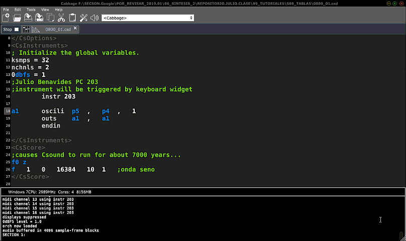
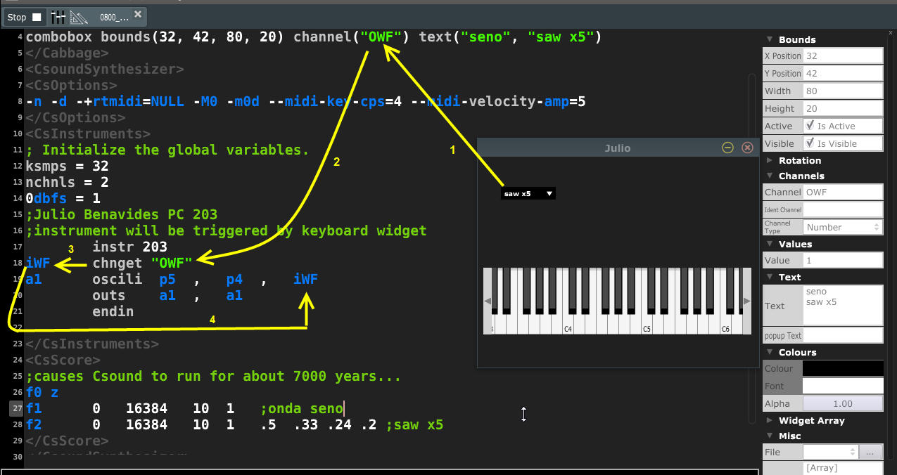

01. Preparación del proyecto
Vamos a implementar un sintetizador que lea unas cuantas tablas como forma de onda. Empecemos con un sintetizador simple usando el opcode oscili.

Aquí nuestro fragmento de código:

Vamos a implementar un sintetizador que lea unas cuantas tablas como forma de onda. Empecemos con un sintetizador simple usando el opcode oscili.

Aquí nuestro fragmento de código:

A continuación crearemos una tabla que contenga la onda seno. Para ello traduciremos el enunciado:
La tabla número 1 es creada en el segundo 0 tiene como tamaño 16384 muestras y utiliza la función generadora GEN 10 para almacenar en ella una onda sinusoidal. En la sección score:

Da igual el espacio entre f y 1, puedes escribirlo f1 como se suele hacer clásicamente.

En seguida dejaremos de usar la forma de onda que está por omisión y pondremos la que hemos enumerado como tabla 1:

Si creamos una tabla 2 que con el GEN10 para que almacene en ella la forma de onda sawtooth con 5 amónicos el procedimiento sería este:

Ahora podremos usar tantas tablas como queramos. Si deseas que el usuario seleccione las tablas desde Cabbage tendrás que colocar un control (groupbox) que permita hacerlo....
El manual de Csound dice, al respecto de oscili, que el número de tabla es un parámetro del tipo i. Por lo que nuestra variable debe ser de ese tipo:

Te toca a tí seguir llenando de tablas este sintetizador e ir probándo el funcionamiento.
Guíate de nuestras hojas de aplicación para ello.
Obra publicada con Licencia Creative Commons Reconocimiento Compartir igual 4.0